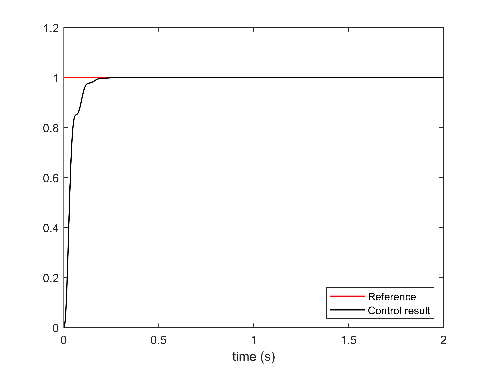

Advanced Matlab/Octave Tutorial -- Control
In previous sections, we have learnt the basic skills to create a simulation using Matlab/Octave. Now,
we will use these skills to implement our own controller. In this section, we use the PID controller
as an example.
PID control stands for the Proportional-Integral-Derivative control. We can read from its name that it consists of three parts, i.e., the proportional, integral, and derivative control. The following figure shows the structure of a system controlled by a PID controller.
The usefulness of PID controls lies in their general feasibility to most control systems. In particular,
PID controls prove to be most useful when the mathematical model of the plant is unknown.
In the field of process control systems, it is well known that the
basic and modified PID control schemes have proved their usefulness in providing satisfactory control,
although in many given situations they may not provide optimal control.There are many variants of PID
controller, such as P controller, PI controller, and PD controller.
As mentioned before, the PID controller consists of three parts and it can be depicted by the following form. $$u(t)=K_pe(t)+K_i\int e(t)dt+K_d\frac{de(t)}{dt}$$ Each part has a gain parameter, denoted by $K_p$ for proportional, $K_i$ for integral, and $K_d$ for derivative, respectively. The performance of the PID controller is governed by these three gain parameters.
Larger $K_p$ usaully leads to faster response since the larger the error, the larger the proportional term compensation. However, an excessively large $K_p$ could cause the instability and oscillation.
The integral part is usually used for the elimination of offset caused by disturbance, etc.
The derivative part can mitigate the overshoot and stability problem arised from a proportional controller with a high gain.
The following table presents the characteristics of different part of the PID controller.
In the previous section, we discussed the basic knowledge of the PID controller. Now, let's see how to implement a PID controller in Matlab/Octave. Basicly, there are two types of implementation, which are the continuous method and the discrete method.
First, let's learn the continuous way to implement a PID controller.
By using the knowledge we learnt in the Sec. Systems Modeling, we can easily obtain the transfer
function of the closed-loop system. Then, utilize the knowledge we learnt in Sec. Systems Analysis,
we can examine the time response of the closed-loop system with the PID controller. Now, we finally
implement the PID controller in a continuous way.
However, to implement the PID controller to a real systems, such as robots, we usually need to design it in a discrete way. Now, let's consider the implementation of PID controller in a discrete way.
There are many methods to implement the discrete PID controller. In this section, we discuss two of them, which are most commonly used.
The basic routine is shown in the following table.
1. At the beginning, set all gains to zero.
2. Increase the P gain until the response to a disturbance is steady oscillation.
3. Increase the D gain until the oscillations go away (i.e. it's critically damped).
4. Repeat steps 2 and 3 until increasing the D gain does not stop the oscillations.
5. Set P and D to the last stable values.
6. Increase the I gain until it brings you to the setpoint with the number of oscillations desired (normally zero. otherwise a quicker response can be obtained if you don't mind a couple oscillations of overshoot)
Basic Knowledge of PID Control
PID control stands for the Proportional-Integral-Derivative control. We can read from its name that it consists of three parts, i.e., the proportional, integral, and derivative control. The following figure shows the structure of a system controlled by a PID controller.

As mentioned before, the PID controller consists of three parts and it can be depicted by the following form. $$u(t)=K_pe(t)+K_i\int e(t)dt+K_d\frac{de(t)}{dt}$$ Each part has a gain parameter, denoted by $K_p$ for proportional, $K_i$ for integral, and $K_d$ for derivative, respectively. The performance of the PID controller is governed by these three gain parameters.
Larger $K_p$ usaully leads to faster response since the larger the error, the larger the proportional term compensation. However, an excessively large $K_p$ could cause the instability and oscillation.
The integral part is usually used for the elimination of offset caused by disturbance, etc.
The derivative part can mitigate the overshoot and stability problem arised from a proportional controller with a high gain.
The following table presents the characteristics of different part of the PID controller.
Implementation of PID Controller
In the previous section, we discussed the basic knowledge of the PID controller. Now, let's see how to implement a PID controller in Matlab/Octave. Basicly, there are two types of implementation, which are the continuous method and the discrete method.
First, let's learn the continuous way to implement a PID controller.
Transfer Function
As mentioned in previous section, a common way to represent the system is the transfer function. Similarly, we can also calculate the transfer function of the PID controller by simple Laplace transformation. The transfer function in the Laplace domain of the PID controller is $$ G_c=K_p+\frac{K_i}{s}+K_ds $$ The block diagram of the closed-loop system with a PID controller looks like:
However, to implement the PID controller to a real systems, such as robots, we usually need to design it in a discrete way. Now, let's consider the implementation of PID controller in a discrete way.
There are many methods to implement the discrete PID controller. In this section, we discuss two of them, which are most commonly used.
Positional PID Control
Positional PID is an approximation of the analog PID. For this algorithm, we use a series of sampling time poins to replace the continuous time, use the summation to approximate the integration, and use the difference equation to approximate the differential. The approximations are as follows: $$ \left\{\begin{aligned} & t=kT, k=0,1,2,\dots\\ & \int_0^te(t)dt\approx T\sum_{j=0}^ke(j)\\ & \frac{de(t)}{dt}\approx\frac{e(k)-e(k-1)}{T} \end{aligned}\right. $$ where $T$ is the sampling period, $e(k)=e(kT)$. Therefore, we can obtain the discrete PID controller as the following form: $$ u(k)=K_pe(k)+k_iT\sum_{j=0}^ke(j)+K_d\frac{e(k)-e(k-1)}{T} $$Incremental PID Control
The incremental PID control can be derived from the positional PID control. We define a control increment $$ \Delta u(k)=u(k)-u(k-1) $$ Using the controller we derived in the positional PID control, we can obtain the incremental PID controller $$ \Delta u(k)=K_p(e(k)-e(k-1))+K_iTe(k)+K_d\frac{e(k)-2e(k-1)+e(k-2)}{T} $$ We accumulatively sum the control increment to update the PID controller. Compared with the positional PID controller, the incremental PID controller doesn't require to record the errors at all steps and only involves the current error and the errors at the last two steps.Parameter Tuning
One key to implement the PID controller well is the tuning of the three gain parameters. However, tuning the parameters is usually empirical and there's no formal analytical ways to do it. Many methods have been developed to faciliate the parameters tuning. Here, we present a most commonly used method.The basic routine is shown in the following table.
2. Increase the P gain until the response to a disturbance is steady oscillation.
3. Increase the D gain until the oscillations go away (i.e. it's critically damped).
4. Repeat steps 2 and 3 until increasing the D gain does not stop the oscillations.
5. Set P and D to the last stable values.
6. Increase the I gain until it brings you to the setpoint with the number of oscillations desired (normally zero. otherwise a quicker response can be obtained if you don't mind a couple oscillations of overshoot)
Example
Now let us use an example to see how the implementation of PID controller works. Consider a system with the following transfer function: $$ G(s)=\frac{523500}{s^3+87.35s^2+10470s} $$ Now, we design a PID controller in the form of transfer function to drive the system to track a step signal with amplitude of 1. Create a new m file and type the following script in it, then run the script and you can obtain the simulation result.
close all;
clear;
% System function
G = tf(5.235e005,[1,87.35,1.047e004,0]);
% PID controller, K_p=0.5, K_i=K_d=0.001
G_c = tf([0.001, 0.5, 0.001], [1, 0]);
sys1 = series(G, G_c);
% Closed-loop system
sys2 = feedback(sys1, 1);
t = 0:0.001:2;
[y, t] = step(sys2, t);
plot(t, ones(size(t)), 'Color', 'r', 'LineWidth', 1)
hold on;
plot(t, y, 'Color', 'k', 'LineWidth', 1)
xlabel('time (s)')
legend('Reference', 'Control result', 'Location', 'southeast')
